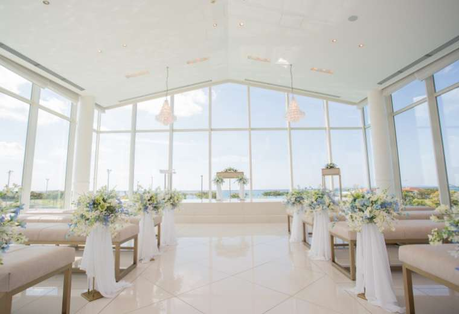
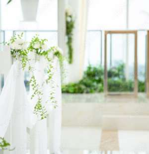
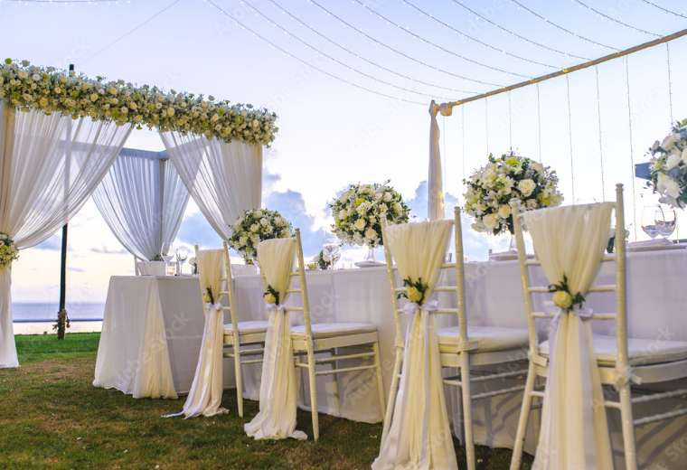
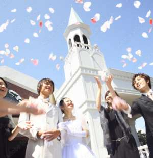

木のぬくもりとあたたかな光につつまれる祝福のセレモニー
Chapel Ceremony
チャペル挙式
誰もが夢見るチャペルセレモニーを叶えるのは、青空に映える白亜のチャペル
南国の鮮やかな緑の中に佇むチャペル。やわらかな風が通り抜ける心地よいロケーションです。
洗練されたシックなインテリアが、お二人の誓いの舞台を清楚な雰囲気で包みます。
キリスト教式での挙式はもちろん、ゲスト全員に結婚の証人となってもらう人前式スタイルでの挙式も可能です。
人前式でのご利用の際は、宗教や格式を気にせずよりお二人らしい結婚式をつくりあげる事が可能です。


ホテル館内併設の会場で、人気の和婚はいかがでしょうか
Shinto Style
神前式
厳かな雰囲気漂う神前式、木の香りが漂う神聖な空間
伝統を重んじる方には、古式ゆかしき神前式を。
白無垢姿が美しく映える神殿は心地よい静寂と緊張がお二人を包みます。
家族の温かなまなざしの中夫婦の契りを。
南国の緑に包まれたチャペルで華やかに
Garden Ceremony
ガーデン挙式
緑に囲まれたガーデンチャペルでリゾートウェディング
太陽の光と青空が心地よいチャペルセレモニー。
夕暮れ時には幻想的なサンセットセレモニーが味わえます。ライトアップの中でのナイトウェディングも魅力の一つです。
チャペルの鐘を鳴らしながら、青空に映えるフラワーシャワーや
バルーンリリースなどのアフターセレモニーもフォトジェニックに演出。


真っ青な海を背景に愛を誓う、南国ならではのセレモニー
Beach Ceremony
ビーチ挙式
鮮やかな青い海に祝福されて誓う永遠の愛、白い砂浜が美しいビーチでの挙式
真っ青な海を背景に愛を誓う、南国ならではのセレモニー。
南国の自然を満喫しながら、ゲストと和やかな時間を過ごす。
南国の太陽に祝福されながら、二人らしいスタイルでの結婚式が叶えられます。